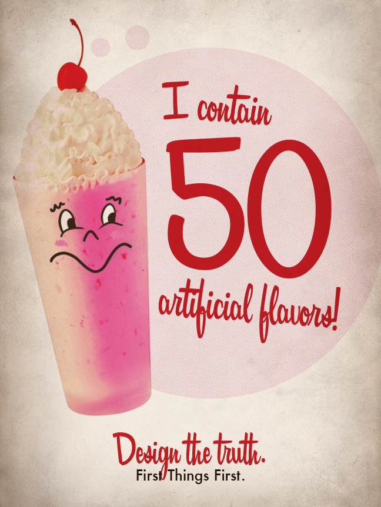

These posters, which give an opinon on the First Things First manifesto, speak about the lies and exaggerations that are told by fast food companies in order to sell their product. I have created two posters which tell the designer viewing it to "design the truth," or to not blantantly lie for a company that is asking you to design an advertisement. This is our responsibility as designers.
